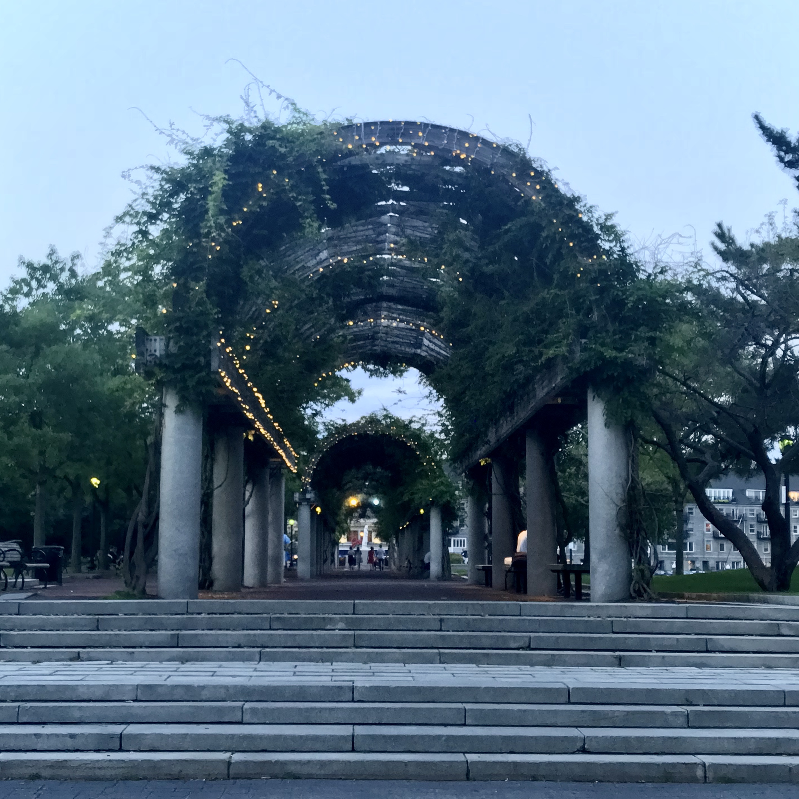
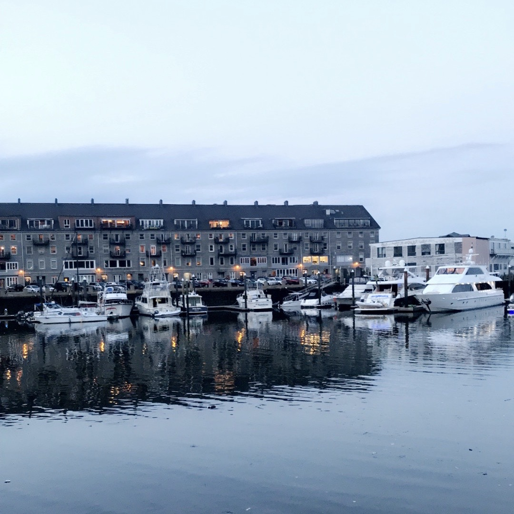

August 2018
In August of 2018, I was able to travel back to my birth city: Boston. I was born in Boston, Massachusetts, but after only a couple of years, my family moved to Illinois. My dad was born in Boston as well, and I've only been a handful of times, but it is my favorite city in the United States.
The summer of 2018, I went on a roadtrip with one of my best friends so we could go visit our other best friend that had moved across the country. She lives in Delaware. Boston wasn't the only place we had visited during that trip. We also went to Atlantic City, Philadelphia, and New York City.
We were staying at our friend's house in Delaware for the trip, but we planned a day trip to Boston. It took us 5 hours to get there and 5 hours to get back but it was worth it. While in Boston, we went to Faneuil Hall Marketplace, Boston Common, and while I have been to Fenway Park before, we didn't go there. We did see the Boston Red Sox play in Philadephia though against the Philadelphia Phillies.
